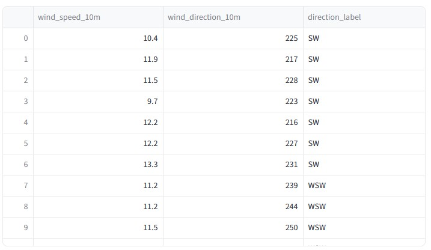
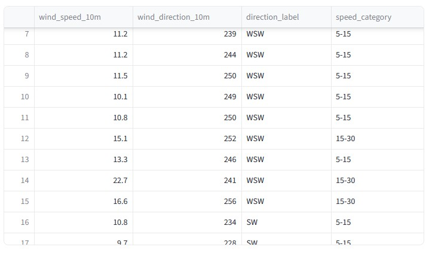

Other Plots
Last updated on 2026-06-11 | Edit this page
Estimated time: 12 minutes
Overview
Questions
- What other kinds of plots can we make with Plotly?
- What is variable “binning” and how would it help make data more understandable?
Objectives
- Create a Wind Rose plot from our weather data.
Making a Wind Rose Plot
We’ve talked about different kinds of plots so far, but usually in
the context of a rectangular image. We’re not just limited to that,
though! In this episode, we’ll look at how to create a wind rose plot
using a Barpolar plot in Plotly.
What is a Wind Rose Plot?
A wind rose plot is a circular plot that shows the distribution of wind directions and speeds at a particular location. It is often used in meteorology to visualize the prevailing wind patterns over a specific period of time, and typically consists of bars that extend outward from the center, with the length of each bar representing the frequency or intensity of winds coming from a particular direction.
In the case of our data, we have hourly wind data which includes both wind speed and direction.
Preparing the Data
We’ve already fetched the hourly wind data, but just in case, go back
up to where we define the parameters_to_request for our
hourly data and make sure to include the following parameters:
PYTHON
parameters_to_request = [
"temperature_2m",
"apparent_temperature",
"precipitation",
"wind_speed_10m",
"wind_direction_10m",
]For the plot we’re working on, we only need the last two parameters, so we’ll pull those out and copy them into their own dataframe:
Binning
We may have gotten into binning when we talked about Histograms, but just to refresh your memory: Binning is the process of grouping continuous data into discrete intervals, or “bins”. This is often done to simplify the data and make it easier to analyze or visualize. For example, if we have a dataset of ages, we might bin the ages into groups like 0-9, 10-19, 20-29, etc. This can help us see patterns or trends in the data that might not be as apparent when looking at the raw data.
In the case of our own wind data, we have the wind direction as a continuous variable (0-360 degrees), but for our wind rose plot, we want to group these into discrete bins for the cardinal and inter-cardinal directions (N, NE, E, SE, S, SW, W, NW).
We’ll define our bins and labels like this:
PYTHON
compass_labels = [
"N",
"NNE",
"NE",
"ENE",
"E",
"ESE",
"SE",
"SSE",
"S",
"SSW",
"SW",
"WSW",
"W",
"WNW",
"NW",
"NNW",
]We’ll add a new column to our dataframe called “direction_label” and assign the appropriate label to each row based on the bin index. A little bit of math is involved here to calculate the bin index from the wind direction:
PYTHON
bin_indices = ((wind_df["wind_direction_10m"] + 11.25) % 360 / 22.5).astype(int)
wind_df["direction_label"] = [compass_labels[i] for i in bin_indices]And add a st.dataframe(wind_df) to check that everything
looks correct:

Next, we want to do the same thing for the wind speed. This time,
we’ll use a pandas functon called pd.cut() which is a
convenient way to bin continuous data into discrete intervals. In order
for this to work, we need to define the edges of the bins and the labels
for each bin:
PYTHON
speed_bins = [0, 5, 15, 30, 50, float("inf")]
speed_labels = ["< 5", "5-15", "15-30", "30-50", "> 50"] # all in km/h
wind_df["speed_category"] = pd.cut(wind_df["wind_speed_10m"], bins=speed_bins, labels=speed_labels)Again, we can check that everything looks correct by displaying the dataframe:

Building the Plot
Now that we have our data prepared, we can start building our plot.
We’ll use a Barpolar plot in Plotly to create our wind rose
plot. The Barpolar plot is a type of polar plot that allows
us to create bars that extend outward from the center, which is perfect
for our wind rose plot.
We’ll use Plotly Grapch Objects for the entire plot. Each trace will be a different speed category:
PYTHON
wind_fig = go.Figure()
for speed_label in speed_labels:
# Count how many hours fall into this speed band for each compass sector
counts = (
wind_df[wind_df["speed_category"] == speed_label]
.groupby("direction_label", observed=True)
.size()
.reindex(compass_labels, fill_value=0) # keep all 16 sectors even if count is zero
)
wind_fig.add_trace(
go.Barpolar(
r=counts.values,
theta=compass_labels,
name=f"{speed_label} km/h",
)
)That gives us a plot that looks like this:

Customizing the Plot
The default colors for the bars aren’t very intuitive, so let’s customize them to make it easier to interpret the plot. We already have blues in our temperature plot, so use greens for wind speeds. Plotly has a built-in color scale called “Greens” that we can use for this purpose.
PYTHON
wind_fig = go.Figure()
# Define a color for each speed category using the "Greens" color scale
colors = color_discrete_sequence = px.colors.sequential.Greens[3 : len(speed_labels) + 3]
for speed_label, color in zip(speed_labels, colors):
# Count how many hours fall into this speed band for each compass sector
counts = (
wind_df[wind_df["speed_category"] == speed_label]
.groupby("direction_label", observed=True)
.size()
.reindex(compass_labels, fill_value=0) # keep all 16 sectors even if count is zero
)
wind_fig.add_trace(
go.Barpolar(
r=counts.values,
theta=compass_labels,
name=f"{speed_label} km/h",
marker_color=color, # set the color for this trace
)
)And then for the overall layout, let’s set some properties to make it look nicer:
PYTHON
wind_fig.update_layout(
title="Wind Direction & Speed Distribution",
polar={
"angularaxis": {
"direction": "clockwise", # compass convention: angles increase clockwise
"rotation": 90, # place North at the top of the chart
},
"radialaxis": {"showticklabels": False}, # hide radial numbers for a cleaner look
},
legend_title_text="Wind Speed",
)This gives us a much more intuitive plot:

Challenge 1: Try some alternate Color Palettes
Check out some of the other color pallets that come with Plotly:
- https://plotly.com/python/discrete-color/#color-sequences-in-plotly-express
- https://plotly.com/python/builtin-colorscales/#builtin-sequential-color-scales
Try swapping out the line that has
px.colors.sequential.Greens with some other options, e.g.
px.colors.sequential.BuPu or
px.colors.qualitative.Set1. Are there any better
options?